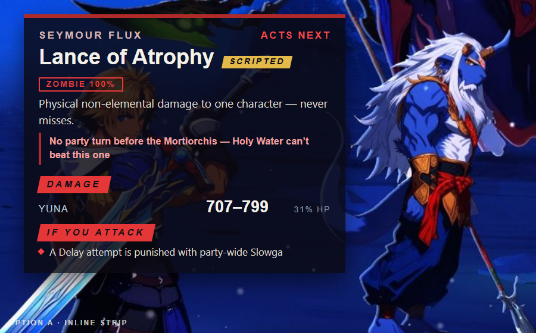
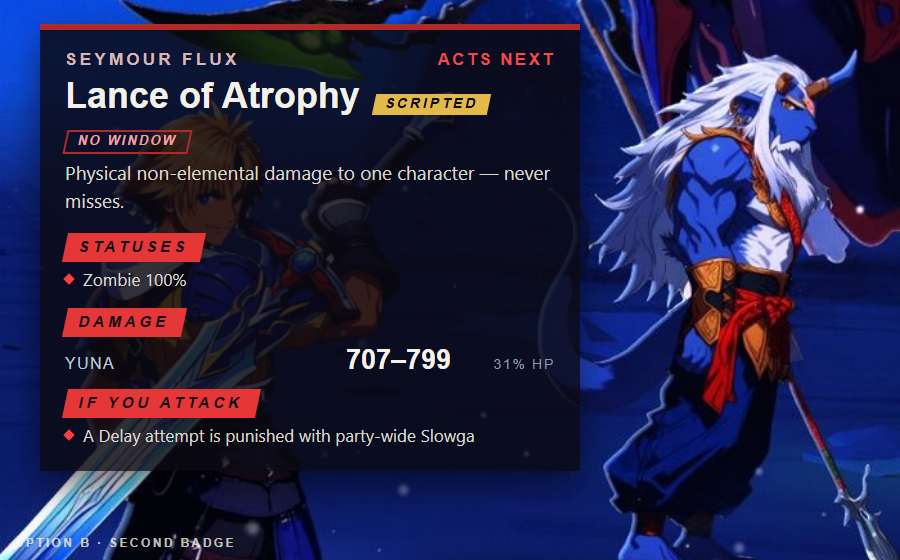
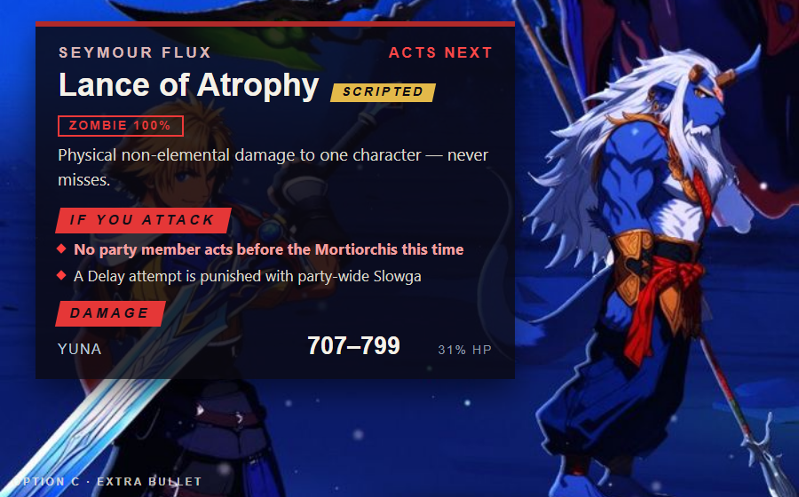

PR-0007 (the Zombie→Full-Life window) + PR-0008 (the guide and the bar), built in one pass per the 2026-09-23 method-check reviews. FFX only. No boss stat, script or damage number changes.



Wording 1Cross Cleave follows the Dispel with nothing in between — what stands through it is HP, Cheer and Auron's 3,410 HP, not Protect.
Wording 2Protect does not survive the Dispel. What does: full HP, five Cheer stacks, and Auron's own 3,410.
Wording 1Holy Water a Zombie when you get the turn for it — about 3 fights in 8, the mount answers before anyone can.
Wording 2Cure a Zombie the moment you have a turn. Often you won't: the mount's Full-Life can land first.
Wording 1Even played well, this fight is lost about 3 times in 8 — most often when Seymour moves first and a Zombie lands right before the mount acts. That is the fight, not a mistake: retry.
Wording 2A loss here usually means Seymour opened and Lance of Atrophy caught someone with no turn to answer it. Not a misplay — about 3 in 8 play out that way. Retry.
Re-baseline PR-0008's bar to at least 95 of 160 wins across the four standard seed windows (measured 100) with at most 2 losses before battle turn 10, in place of the critic's 36 of 40 — yes or no?
Parked, not part of this ask: Haste-on-Seymour's win effect is unsettled between the two probes (26→21 of 40 vs 99 vs 100 of 160).